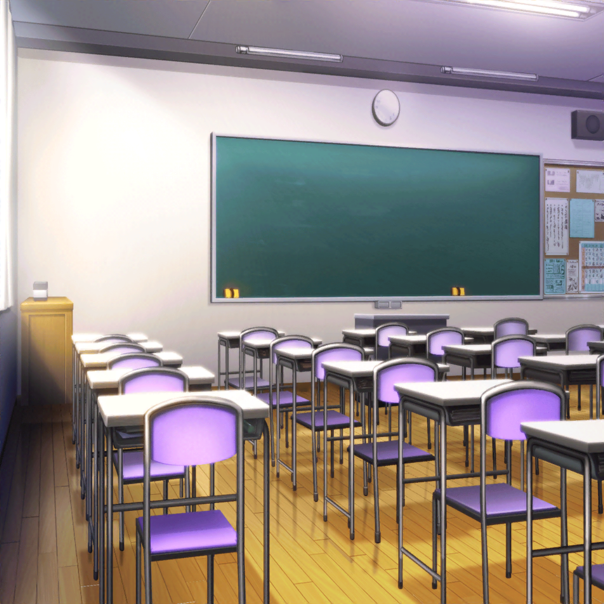

花咲川女子学園 1-A
有咲
……っと。今の、どうだった？
たえ
もうちょっと、入りは早めの方がいいかな。
サビの頭からギターに重ねるイメージだよ
有咲
うあー……できねぇ
たえ
一度休憩にしようか
有咲
そうだなー……
たえ
でも、上手くなってるよ
たえ
こうして秘密の特訓するなんて、
有咲って偉いよね
有咲
別に、秘密じゃねーし！
たえ
でも、ふたりで練習したいって……
有咲
ただ時間があまっただけっていうか……
今日、香澄達は用事があるっていうし
たえ
そっか
有咲
おたえは私に付き合って、よかったわけ？
たえ
うん。ただ、最初は勘違いしちゃったけど。
放課後の教室に呼び出して、ふたりきりって……
有咲
そんな少女漫画みたいなことしねぇよ！
たえ
殴り合いのケンカでもするのかと思った……
有咲
そっちかよっ！？
たえ
でもちょうど、何も用事なかったから大丈夫
有咲
そっか。なら、いいんだけど。ところで新曲の曲作りは？
たえ
まだちょっと悩んでるかな。
少し気分転換したかったくらい
有咲
ふーん。曲、どんなところで悩んでるんだ？
たえ
もふもふで可愛いよ。
白い子とか茶色い子とか
有咲
……は？ なんの話してんの？
たえ
気分転換の話
たえ
中等部の飼育小屋に、
いっぱいうさぎがいるんだよ。
たまに撫でにいくと、いい気分転換になるの
有咲
はあ……おたえって、ホントにこうだよな。まあいいや。
うさぎのこと、はじめて知ったな
たえ
ロップイヤーとか、ドワーフとか。
いっぱいいるよ
有咲
ロップイヤーはなんとなく聞いたことあるけど、
ドワーフってなんだよ。ゲームのキャラしか浮かばねぇ
たえ
ドワーフは小型のうさぎだよ。実物見た方が早いんだけど……
有咲
行かない
たえ
連れて来る？
有咲
駄目だろ！？
有咲
それより練習しよ、練……
女生徒
きゃああああああああああああああああ！！！！
有咲
な、なんだ！？
たえ
廊下からだ

有咲
うわっ！ なんだよこれ！？
たえ
うさぎがいっぱい走ってくる……
あ、この子がドワーフだよ
有咲
普通に抱き上げんなよ！？
女生徒
待ってー！
たえ
あっ、飼育委員の子だ
女生徒
はぁ、はぁ……た、たえ先輩……
たえ
どうしたの？
女生徒
す、すみません……！
うさぎ20羽が飼育小屋から逃げちゃったんです！！
私が鍵をちゃんと掛けてなかったから……
有咲
そりゃ災難だったな。まあ、がんばって……
たえ
私達にまかせて
有咲
ちょ、おたえ、どこ行くんだよ！？
てか、私「達」って！？
たえ
うさぎを小屋に戻さないと
有咲
はぁ〜……マジか……
たえ
手分けして探そう。
高等部にいるうさぎは私と有咲が
女生徒
は、はい！
では中等部の校舎にいるうさぎは私が！
たえ
了解
有咲
おい、私おいて話進めんな！
それにせめてギターは置いてけ！